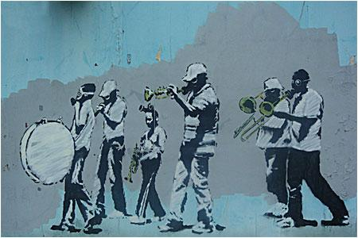

Credit
Another of the New Orleans pieces from Banksy shows a marching band wearing gas masks. The building that it appeared on has since been demolished, but it was one of the most iconic of Banksy’s work in the city.
2008-07
Spray Paint
New Orleans, USA